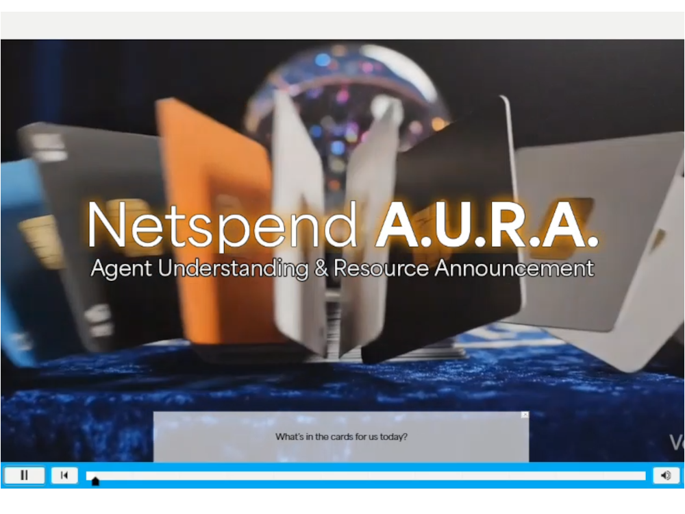
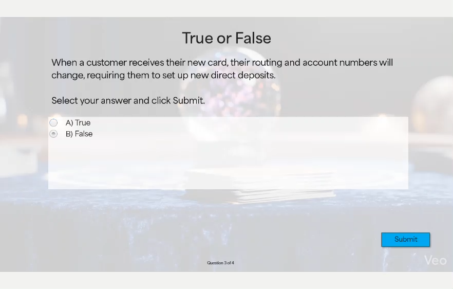

Introducing a New Learning Modality
Netspend | Customer Success | Q1-Q2 2026
I introduced micro-eLearning as a new training modality for vendor-supported product launches and updates. Previously, all launch training was delivered through instructor-led sessions, regardless of content complexity. By shifting short-form updates to targeted eLearning experiences, I reduced billable training time by 71%, accelerated development timelines, and created a more consistent learning experience for agents across locations.

Problem
The standard approach for product launches and process updates relied exclusively on instructor-led training.
This created several challenges:
- Vendor partners were required to coordinate multiple classes over a two-week period to reach hundreds of agents.
- Training sessions averaged 45 minutes when accounting for class setup, attendance, delivery, and return-to-work time.
- Many updates contained less than 10 minutes of essential content.
- Virtual sessions were often combined across sites despite content not being designed for a virtual audience.
A more scalable solution was needed to deliver time-sensitive updates while maintaining engagement and knowledge retention.
Research & Analysis
To understand how learners interacted with self-paced content, I piloted an interactive article within the LMS.
The initial solution included:
- Interactive elements such as tabs and flip cards.
- Narrated audio to support engagement and accessibility.
- Supervisor one-page guides to reinforce learning after launch.
- Content followed the tool’s UI structure rather than a logical, customer-centered flow.
Analysis of learner data revealed a key challenge:
- The narrated content was approximately three minutes long.
- 78% of learners completed both the training and assessment in less time than the audio duration, indicating that many learners were skimming content rather than engaging with it.
I partnered with vendor stakeholders to better understand learner preferences. Feedback consistently pointed toward short-form video content that was fast, visually engaging, and immediately applicable on the job.

Design Process
My goal was to create concise, accessible learning experiences that reduced training time while improving learner engagement.
To accomplish this, I:
- Shifted from text-heavy interactions to video-based micro-learning.
- Designed content to be completed independently in minutes rather than requiring scheduled classroom sessions.
- Created supporting supervisor resources to reinforce key messages after launch and provide just-in-time coaching.
- Incorporated visual demonstrations that connected product updates directly to real customer interactions.
While developing the learning strategy, I analyzed documentary-style storytelling techniques and observed that visuals typically changed every few seconds to maintain attention. I applied this principle to micro-learning design by pairing concise narration with frequent visual transitions and contextual animations.
Development
Using Adobe Captivate and Gemini’s Omni, I developed short-form micro-eLearnings that combined storytelling, motion graphics, and interactive practice.
Key improvements included:
- Created themed, scenario-driven learning experiences that increased learner interest and attention.
- Used contextual video clips and animations to reinforce key concepts and product changes.
- Added visual cues that highlighted where agents would find information within their tools during live customer interactions.
- Embedded knowledge checks immediately after key learning moments to reinforce retention.
- Required learners to reference job aids and internal resources during activities, encouraging behaviors used on the job.
The accompanying supervisor one-sheet remained a critical support tool, particularly when launch dates shifted after training completion and agents needed refresher guidance before go-live.
Results
The new micro-eLearning approach successfully established an additional learning modality for Customer Success training.
Outcomes included:
- Reduced billable training time by 71%.
- 77% of learners completed training in under 15 minutes.
- Created a consistent learning experience regardless of learner location.
Next Steps
- Expand the video-based micro-learning model to additional product and process updates.
- Compare knowledge retention and performance metrics between micro-eLearning and traditional ILT delivery.
- Continue leveraging AI-supported development workflows to accelerate production while maintaining instructional quality.